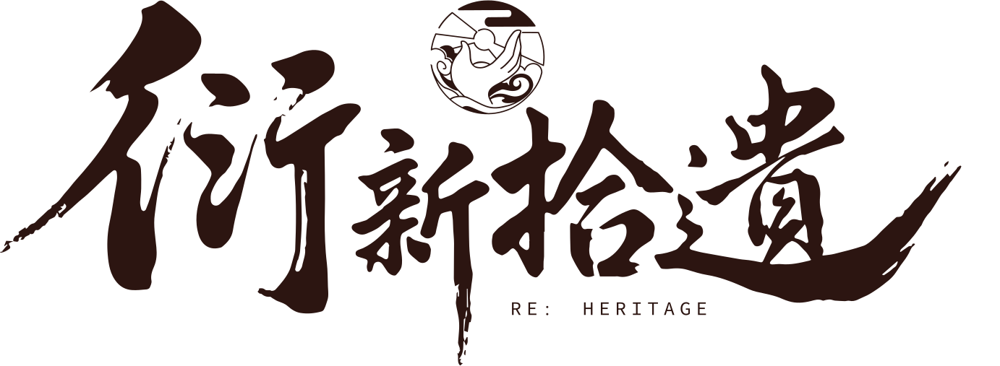

首页
核心项目
公司文化
品牌理念
联系合作
核心项目 · 文创产品线
数字化
非遗文创
将传统纹样、技法与现代设计语言融合，创造兼具文化深度与当代审美的数字文创产品。
产品矩阵
四大产品类别
藏
01
数字藏品
基于非遗技艺创作的限量数字藏品，以区块链技术确权，让传统艺术在数字世界焕发新的收藏价值。
纹
02
纹样数据库
系统采集、数字化整理各地非遗纹样，构建可检索、可授权的纹样素材库，服务设计师与品牌方。
授
03
IP 授权
非遗主题原创IP的开发与授权体系，与品牌跨界合作，将非遗元素融入消费品与商业空间。
物
04
实体衍生品
从数字到实体，开发文具、服饰、家居等非遗主题产品线，让传统工艺之美走进日常生活。
精选案例
项目实践
绣
人物记录 · 非遗顾绣
非遗顾绣人物数字记录计划
与国家级非遗“顾绣”代表性传承人钱月芳合作，通过实地拜访与影像采集，系统记录其近半个世纪的刺绣实践与艺术经验。围绕其代表性作品与教学过程，梳理顾绣“以针代笔”的工艺特征与审美体系，并以数字化内容形式呈现。每份记录均附带顾绣历史源流、技法解析及其个人传承故事，构建传统刺绣技艺的当代表达与传播路径。
螺
数字交互 · 非遗螺钿
非遗 × 数字化
以螺钿技艺为核心，通过线下手作实践与数字化交互展示相结合的方式，系统呈现其材料特性与制作流程。围绕选材、打磨与镶嵌等关键环节，设计参与式体验内容，引导同学在实践中理解螺钿工艺的技法逻辑与审美特征；同时整合数字化展示，对螺钿纹样演变、工艺步骤及典型案例进行结构化梳理与呈现。每项体验内容均配套工艺解读与文化背景说明，构建传统手工艺的多维度传播路径。
瓷
实体衍生 · 日用器物
非遗转译 · 品牌文创开发计划
以传统非遗元素为核心资源，结合当代设计语言与数字化手段，对经典纹样与工艺符号进行系统化提炼与再设计。围绕产品形态、视觉识别与使用场景，开发具有文化内涵与市场适配性的文创系列，并通过数字化展示与传播渠道强化品牌叙事。每件文创产品均配套非遗背景说明与设计转译逻辑，构建传统文化在当代语境中的可持续表达与品牌化路径。